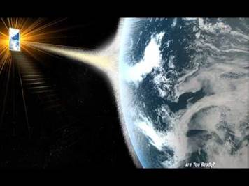
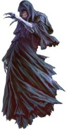

The Hourglass Is Almost Empty *The Words of Archangel Michael
It is his time
No one can stop him
The Belicamp-The Belicamp-The Belicamp
I smell death
And so it is, for this is your destiny
This sign is given
As it is for this land
So it is for this world
The pieces are placed together
For the prophecy to begin
The terrible time is upon us
Woe to the inhabitant of this land
Woe to those who live in this world
There is no escape
God the Father has made his play
God has chosen his way
Mankind has found his end
Only the Prophecy of the Magician can deliver the few
He comes by the light and the sky
And it is so saith the Lord
Call on the Father, Call on the Angels
Your cries fall on death ears
For this is the land of the dead
And it is so saith the Lord
For a great death comes from the sky
The Belicamp, the Belicamp, the Belicamp
Pray for the Lord and the Magician
For the Belicamp encircles them
The Father has sent the Belicamp to stop them
The Belicamp is the Demon of the Father
We walk along the river
I walk ahead and encounter the Belicamp
He stoops close to the ground and eats
New life has sprung from the ground
I am no more than twelve feet away
He eats next to the river and pays me no mind
I hear the Hourglass is almost empty